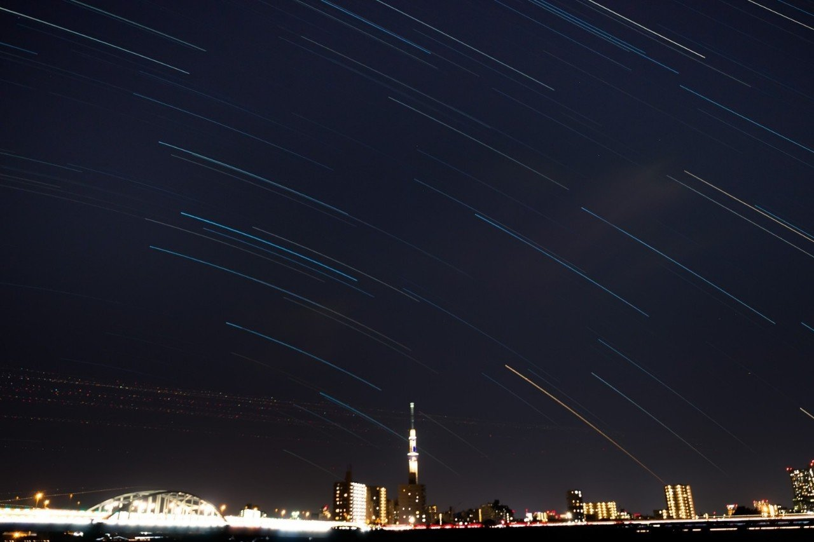

いま見えている星は
何光年も前の光なんだよ
って君に言ったら
まるで子どものようなまん丸い瞳で
僕のこと見返したね
気づいてないと思うけど
あのとき君は僕の気持ちに
言葉すら必要のないスピードで
愛しさを届けてくれた
街灯もない夜のはじっこ
心に吹くすきま風から
君を守ることなんてできない
だけど
ふと見上げると変わらない光
そんな存在なら僕に任せておくれ
昼間はみんながいるから
姿は決して見せないけれど
静かで一人ぼっちな夜がくれば
考え過ぎで真面目な君の頭上に
毎晩顔を出すんだ
天気の悪い夜は
雲々をかきわけて
君を見つけてみせるから
夜空すら見上げる暇のない日は
窓の色味を変えるくらい
君へ光を届けるさ
そしていつの日か
何年も何十年も経って
僕が輝いて見えたなら
そんな夢のような
未来の君がいたとしたら
いま精一杯の気持ちを込めて
君に送るよ
君は美しい
僕のたった一つの輝きさ